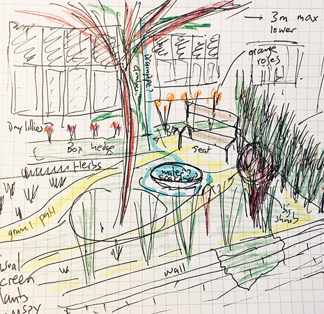

class: center, middle # An introduction to <br>Forest Gardening üå≥ ### _Old ways, new paradigm_  by Jake Rayson [@ForestGdnWales](https://twitter.com/ForestGdnWales)<br> [www.forestgarden.wales/talks/intro](https://www.forestgarden.wales/talks/intro/) ##### Press `P` to see notes and credits ###### This work is licensed under a [Creative Commons Attribution 4.0 International License](http://creativecommons.org/licenses/by/4.0/), embedded work may have other licenses. --- class: center, middle # Forest Gardening üå≥ ### _Working with nature<br>to create edible crops_  ??? * Web designer 20 years. Forest gardener 3 years. * 2 x 1 acre forest gardens * 8 acre site, woodland, coppice, rough pasture --- # My path into gardening  [Creating a Forest Garden](https://www.agroforestry.co.uk/product/creating-a-forest-garden-2/) by Martin Crawford Devoured in 2012 ??? * Bought book 2012 * Working with nature. * Read it cover to cover in a terraced house with a paved yard for 3 years. --- ## From terraced house with backyard‚Ķ  --- ## ‚Ķto farmhouse with 8 acres  --- class: center, middle ## A talk of 3 halves  ### 1. Why ### 2. What ### 3. How ??? * Apple blossom from 'Annie Elizabeth' --- class: center, top ## Part 1  # Why a forest garden? --- ### Wildfires, California 2018  ??? * [California Wildfires 2018 on Wikipedia](https://en.wikipedia.org/wiki/2018_California_wildfires) * Deadliest & most destructive fire season * 104+ people died --- ### Cycline Idai, Mozambique 2019  ??? * [Cyclone Idai on Wikipedia](https://en.wikipedia.org/wiki/Cyclone_Idai) * 1,000+ fatalities * Second deadliest tropical cyclone recorded in South-West Indian Ocean basin --- ### Fruit bats, Australia 2018  ??? * Photo by David White * One-third of species Spectacle Fruit Bats killed by heatwave * 23,000 bats died * [BBC story](https://www.bbc.co.uk/news/world-australia-46859000) --- class: center, middle # Humans ‚Äúthreaten 1 million species with extinction‚Äù  ??? * United Nations [Intergovernmental Science-Policy Platform on Biodiversity and Ecosystem Services](https://www.ipbes.net/) (IPBES) * [Media Release of Global Assessment](https://www.ipbes.net/news/Media-Release-Global-Assessment) * BBC [Nature crisis: Humans 'threaten 1m species with extinction'](https://www.bbc.co.uk/news/science-environment-48169783) 6 May 2019 * BBC [Nature loss: Report to show scale of 'silent crisis'](https://www.bbc.co.uk/news/science-environment-48160456) 6 May 2019 --- # A forest garden<br>is a wildlife garden  ??? * An **ecosystem** * Biodiversity of species * Relies on wild predators & pollinators * Self-fertilising with plants * Good habitat * Sequesters carbon; mature tree 20kg per year * Small footprint * [Why a forest garden is good for climate change])(https://www.forestgarden.wales/blog/forest-garden-good-for-climate-change/) --- class: center, top ## Part 2  # What is a forest garden? --- # What is it? > Forest gardening is a productive, sustainable and low-maintenance way of gardening, combining trees, edible shrubs and perennial vegetables.  ??? 1. Productive * Food, wood, etc * Multi-layered, in [4 dimensions](/blog/seven-layers-forest-garden/) 2. Sustainable * Mineral accumulators & nitrogen fixing plants * Wild predators & pollinators * Permanent ‚Äúliving mulch‚Äù * Trees, plants & soil sequester carbon. * Biodiverse 3. Low maintenance * Resilient! * No watering * Minimal weeding * No dig * No fertilisers * No compost --- # Forest garden harvest Start with what you want <div style="float:left"> * Fruits, nuts & seeds * Vegetables & salad * Herbs & spices * Firewood * Mushrooms * Poles, canes & twine * A beautiful space </div> <img style="float:right;" src="img/harvest.jpg" width="50%"> ??? ##¬†Credits * Nashi pear CC BY-SA 3.0, https://commons.wikimedia.org/w/index.php?curid=1053284 * Sweet chestnuts by Fir0002 - Own work, GFDL 1.2, https://commons.wikimedia.org/w/index.php?curid=194812 * Pine nuts by National Institute of Korean Language - http://krdict.korean.go.kr/eng/dicSearch/viewImageConfirm?nation=eng&searchKindValue=image&ParaWordNo=73584&ParaSenseSeq=1&multiMediaSeq=1, CC BY-SA 2.5, https://commons.wikimedia.org/w/index.php?curid=54784498 * Lime flowers & bumblebee by Ivar Leidus - Own work, CC BY-SA 4.0, https://commons.wikimedia.org/w/index.php?curid=49911060 * Szechuan pepper by Didier Descouens - Own work, CC BY-SA 4.0, https://commons.wikimedia.org/w/index.php?curid=7801853 * Phormium tenax by Dan Kirtiansen https://www.flickr.com/photos/dankristiansen/ * Shiitake mushroom by frankenstoen from Portland, Oregon - Shiitake Mushrooms, CC BY 2.0, https://commons.wikimedia.org/w/index.php?curid=7304024 * Firewood by Toyohara https://www.flickr.com/photos/toyohara/ * Bamboo by Bruce Fingerwood https://www.flickr.com/photos/springfieldhomer/ * Apple mint by Broly0 - Own work, CC0, https://commons.wikimedia.org/w/index.php?curid=40553620 --- class: center, top # What does your garden <br>want to be?  ??? * [Climax vegetation](https://en.wikipedia.org/wiki/Climax_community) * [Ecological succession](https://en.wikipedia.org/wiki/Ecological_succession) * Pioneering plants --- class: center, top # What do we want our<br>gardens to be?  ??? * What a lot of bother * Also, not really productive * "Gardening is control of nature but we don‚Äôt want to be control freaks" ~ Tom Coward, Head Gardener, Gravetye Manor 2015 ## Credits * Photo of Hanbury Hall formal garden by muffinn on Flickr https://www.flickr.com/photos/mwf2005/ --- class: left, middle # Climax vegetation  * Energy * Fragility * Uniformity * Maintenance * Greenhouse gas emissions ??? * The further right you go, the more you need. * Frederic Clements coined the term in 1916. * [Climax vegetation](https://en.wikipedia.org/wiki/Climax_community) ## Credits * Illustration copyright ¬© Marion Smylie-Wild, used with permission pp19 [Creating a Forest Garden](https://www.agroforestry.co.uk/product/creating-a-forest-garden-2/) by [Martin Crawford](https://www.agroforestry.co.uk/about_us/) --- # Scientifically efficient üë©‚Äçüî¨ Efficiency is the ratio of the _input_ to the output. ```html Animal 1 : 0.8 Arable 1 : 4.0 Forest Garden¹ 1 : 40.0 ``` ??? 1. [Gerald Leach: Energy and food production](https://www.amazon.co.uk/Energy-Food-Production-Gerald-Leach/dp/0902852558) (IPC, 1976). * Agroforestry eg [Broadlears Field project](https://www.dartington.org/about/our-land/agroforestry/) at Dartington * See sustainable agriculture eg [Tolhurst Organic](http://www.tolhurstorganic.co.uk/about-us/why-choose-us/) * Proviso: once established * Perennial plants are less work * No compost bins, compost in situ Forest gardening also flexible, any size or part of garden. --- class: center, top ## Part 3  # How do I forest garden? --- ## Before  --- ## After  --- ## OFG & FG1  --- # Jobs in order <div style="float:left;"> 1. Plan 2. Windbreaks 3. Canopy trees 4. Propagate 5. Sheet mulch 6. Plant shrubs 7. Plant ground cover </div>  ??? * Image from Forest Garden Wales, North Face windbreak --- # 1. Plan  * [Tree spacing](https://www.forestgarden.wales/blog/tree-spacing-forest-garden/) * [Rootstocks](https://www.forestgarden.wales/blog/rootstock-reference/) * Windbreaks ??? * [QCAD software](http://www.qcad.org/en/) with satellite photo from Apple Maps * Scale paper drawing * Don‚Äôt forget to plan your nutrients ‚Äì pp57 Creating a Forest Garden * Get a soil sample from CCF * OS map from [The Map Centre](https://www.themapcentre.com/), about ¬£40 * Can use [Google](https://goo.gl/maps/934sTaTfWw22)/[Bing](https://binged.it/2sMlUhY) maps * Remember, the map is not the territory * Paper cut-out circles for tree positionings --- # Here‚Äôs one I made earlier  Calculate areas (ground cover), position trees (diameters) ??? * Drawing made in [QCAD](http://www.qcad.org/en/) --- # And another one  Ornamental Forest Garden --- # 2. Plant windbreaks * [Elaeagnus umbellata](https://pfaf.org/User/Plant.aspx?LatinName=Elaeagnus+umbellata) (autumn olive) * [Hippophae rhamnoides](https://www.pfaf.org/USER/plant.aspx?LatinName=Hippophae+rhamnoides) (sea buckthorn) * [Viburnum opulus](https://www.pfaf.org/user/Plant.aspx?LatinName=Viburnum+opulus) (guelder rose) * [Amelanchier canadensis](https://www.pfaf.org/user/Plant.aspx?LatinName=Amelanchier+canadensis) (juneberry) * [Cornus sericea](https://pfaf.org/user/Plant.aspx?LatinName=Cornus+sericea) (red osier dogwood)  ??? * Examples that have worked well for us * All available as cheap bare-root hedging plants * Don‚Äôt forget [Rosa rugosa](https://www.pfaf.org/user/plant.aspx?latinname=Rosa+rugosa) (japanese rose) ##¬†Credits * Amelanchier canadensis by yamatsu on Flickr https://www.flickr.com/photos/29310050@N04/ * Elaeagnus umbellata berries by Wendell Smith on Flickr https://www.flickr.com/photos/wendellsmith/ * Viburnum opulus berries by Nickolas Titkov on Flickr https://www.flickr.com/photos/titkov/ --- # Cornus windbreak  ??? * Cornus sericea 'Flaviramea' windbreak on north west side of Forest Garden Wales * Bought from [www.treesandhedging.co.uk](http://www.treesandhedging.co.uk/) 85p each + VAT --- # 3. Plant canopy trees * [Rootstock!](https://www.forestgarden.wales/blog/rootstock-reference/) * Spacing * Pollination * Fruit trees [www.orangepippin.com](https://www.orangepippin.com/apples) * Nut trees - squirrels & [Castanea sativa](https://www.pfaf.org/user/plant.aspx?LatinName=Castanea+sativa) * Nitrogen fixing - [Alnus cordata](https://www.pfaf.org/user/Plant.aspx?LatinName=Alnus+cordata) ??? _Considerations:_ * Tree spacing ¬º‚Äì¬Ω of combined tree diameters * Plant small trees under high trees * [Only stake dwarf rootstock (M26 & smaller)](https://www.forestgarden.wales/blog/don-t-stake-fruit-trees/) * Pollinating partners * Wind exposure * Small trees under eg Alnus cordata, can raise canopy * Don‚Äôt forget rabbit guards, super cheap [on Amazon](https://www.amazon.co.uk/100-SPIRAL-TREE-GUARDS-60cm/dp/B0041Z90TM/) 22p each * No Castanea sativa imports --- # 4. Propagate ground cover * [Rubus nepalensis](https://www.pfaf.org/user/plant.aspx?latinname=rubus+nepalensis) (nepalese raspberry) * [Vinca minor](https://www.pfaf.org/user/plant.aspx?latinname=Vinca+minor) (lesser periwinkle) * [Symphytum ibericum](https://www.rhs.org.uk/Plants/75444/Symphytum-ibericum/Details) (dwarf comfrey) * [Fragaria viridis](https://www.pfaf.org/User/Plant.aspx?LatinName=Fragaria+viridis) (green strawberry) * [Mentha longifolia](https://www.pfaf.org/user/Plant.aspx?LatinName=mentha+longifolia) (horse mint)  ??? * Again, examples that have worked well for us * 'Mother' bed * _Supposed_ to put them in pots ## Credits * Rubus nepalensis berry by Jas on Flickr https://www.flickr.com/photos/21442314@N07/ * Vinca minor by Magrit on Flickr https://www.flickr.com/photos/27126314@N03/ * Mentha longifolia by Andreas Rockstein on Flickr https://www.flickr.com/photos/74738817@N07 --- # Propagation bed  ??? * Raised bed at Forest Garden Wales --- # 5. Sheet mulch * Quality plastic woven sheet mulch, 3-4m wide * Re-usable metal pegs * **Weigh it down!** * 6 months grass, 12 months dandelions * Consider using less more efficiently!  ??? * Use meadow as ground cover until ready to sheet mulch * Decent make Mypex, Phormisol * Martin Crawford uses Phormisol 100g weight --- # Chalk circles  ??? * Use [magic bamboo marker](https://www.flickr.com/photos/forestgardenwales/28391494269/in/photolist-KfRQ6T) with string, tied with knots every 0.5m * Bucket of powdered lime --- # 6. Plant shrubs * Bamboo * Chaenomeles spp. * Mahonia spp. * Phormium spp. * Rosa rugosa  ??? * List inspired by showy ornamental shrubs pp21 Creating a Forest Garden ##¬†Credits * Quince flower on bush by Martin LaBar on Flickr https://www.flickr.com/photos/martinlabar/ * Mahonia aquifolium by Nacho on Flickr https://www.flickr.com/photos/gonmi/ * Rosa rugosa hips by Bruno Parmentier on Flickr https://www.flickr.com/photos/bpmm/ --- # 7. Establish ground cover 1. Spread bark or wood chip* mulch 2. Plant ground cover 3. Sow temporary cover  ??? * *See [Myths, Miracles or Marketing? Wood Chip Mulch](https://puyallup.wsu.edu/lcs/) on [Horticultural Myths](https://puyallup.wsu.edu/lcs/) by Professor Linda Chalker-Scott * Mark out shrubs with bamboo, write name, height x diameter * Bark approx 1.5 tonne per 100m¬≤. [Newbridge Sawmills](http://www.jamesdaviessawmills.co.uk/) near Cenarth sells it for ¬£38.50 +VAT per tonne, on industrial trailer only, weekdays. * For large areas (ie acres), consider wood chipper for mulch & flail mower to keep grass down. * I have used [Sinapis alba](https://www.pfaf.org/user/plant.aspx?LatinName=Sinapis+alba) (white mustard) with great success, partially overwinters. * I bulk bought 27kg Sinapis alba from [Cotswold Seeds](https://www.cotswoldseeds.com/product/mustard-sinapis-alba) for ¬£50. --- class: center, middle # _The End of the Beginning_  > Forest gardening is a productive & practical garden system using trees, shrubs & perennial plants, designed to be stable, sustainable & low-maintenance. ??? * The right thing to do. * Amser nesa, mae rhai da fi siarad yn Gymraeg! * Next time, herbaceous perennials, mushrooms, herbs, climbers, coppicing etc. * Any questions? --- # Questions & Answers * _What is the source for the energy ratios for forest gardening on **Scientifically efficient** slide?_ [Gerald Leach: Energy and food production](https://www.amazon.co.uk/Energy-Food-Production-Gerald-Leach/dp/0902852558) (IPC, 1976). * _Are there alternatives to plastic sheet mulch?_ Yes, there are [biodegradable plastics](http://cru.cahe.wsu.edu/CEPublications/FS103E/FS103E.pdf) and papers. Considerably more expensive and not as reusable. --- # Appendix: reference * [Martin Crawford](https://www.agroforestry.co.uk/): books, courses, plants * [Plants for a Future](http://www.pfaf.org/): massive database of useful plants * [RHS Plants](https://www.rhs.org.uk/plants/): good database for more ornamental plants * [Orange Pippin](https://www.orangepippin.com/apples): super fruit tree reference * [Joy of Plants](https://joyofplants.com/): excellent plant app database for iOS [](https://www.agroforestry.co.uk/product/creating-a-forest-garden-2/) --- # Appendix: local suppliers * Aisha at [Ty Rhos Trees](http://www.tyrhostrees.co.uk/), lovely trees and hedging * Anthony & Emma at [Hyphae Shroomery](https://www.facebook.com/HyphaeShroomery), mushroom knowledge & inoculant * Roger at [Trefedhyn Garden Centre](https://www.trefhedyn.co.uk/), perennials & hedging * [Penrallt Garden Centre](http://penralltnursery.co.uk/) * Neil at [Brondesbury Park Garden Centre](https://duckduckgo.com/?q=brondersbury+garden+centre&t=ffab&ia=web), stock [Martins TLC peat-free compost](http://www.martins-tlc.co.uk/) * Dave at [Teifi Valley Garden Machinery](https://duckduckgo.com/?q=teifi+valley+garden+machinery&t=ffab&ia=web)